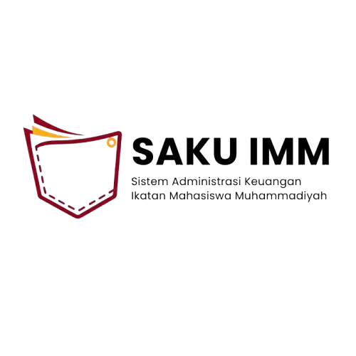
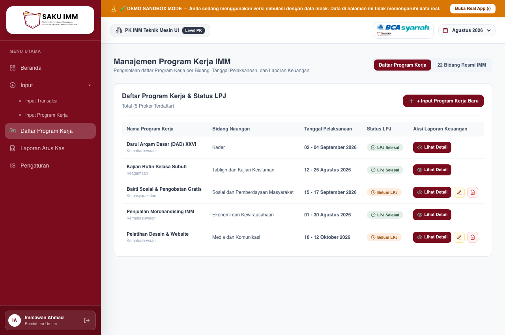
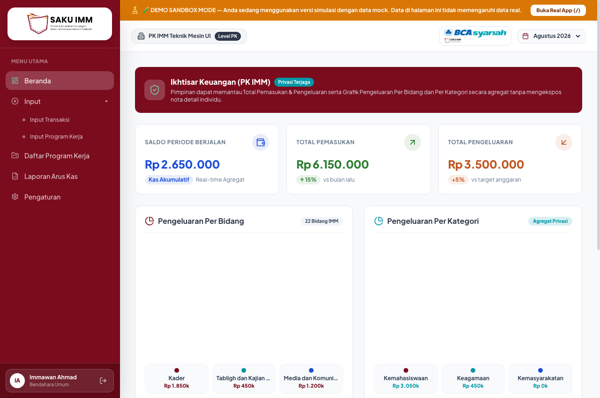
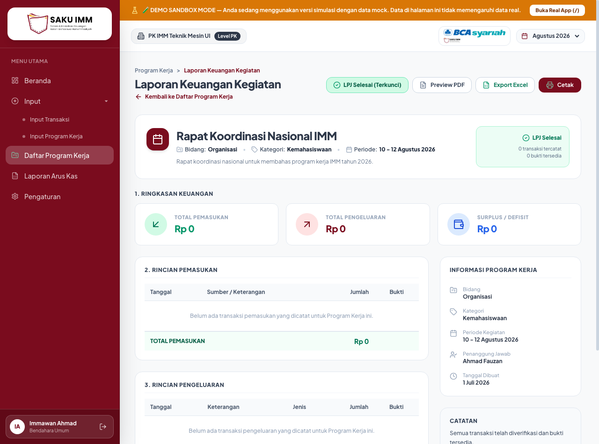
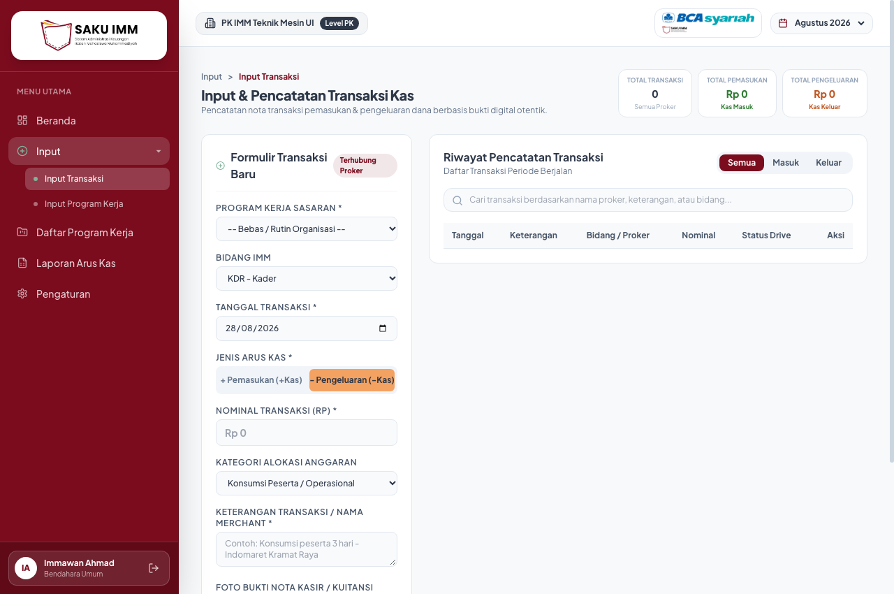
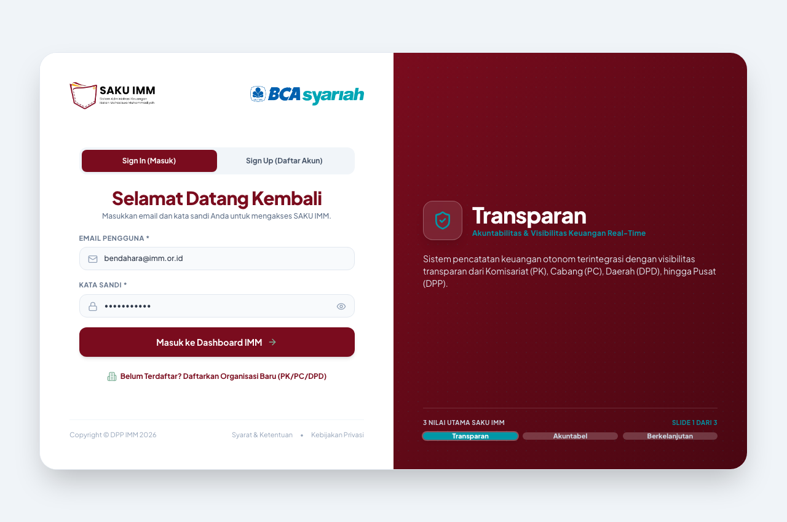
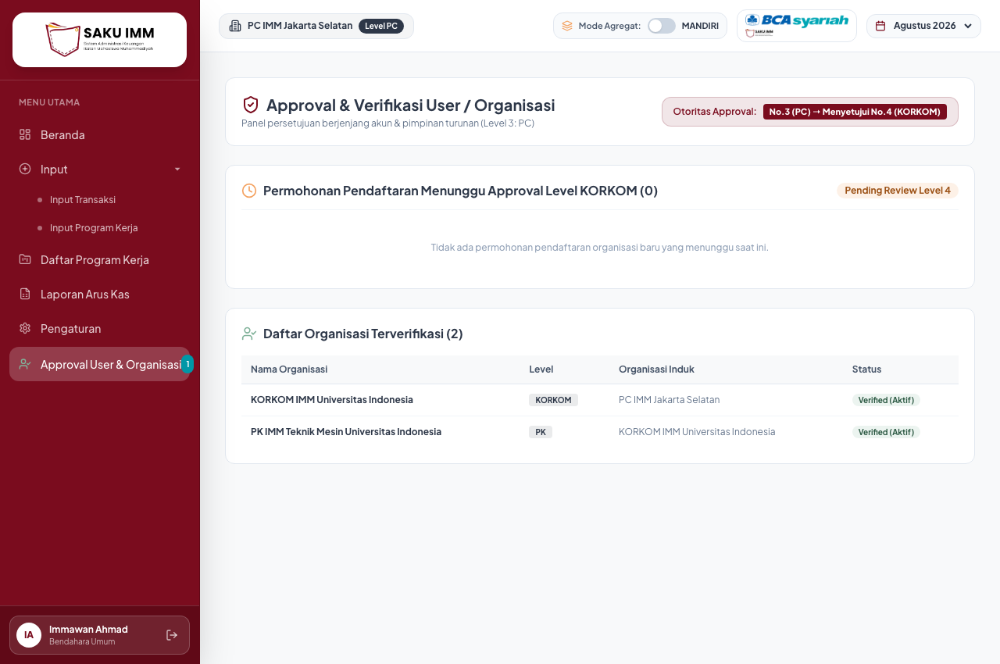
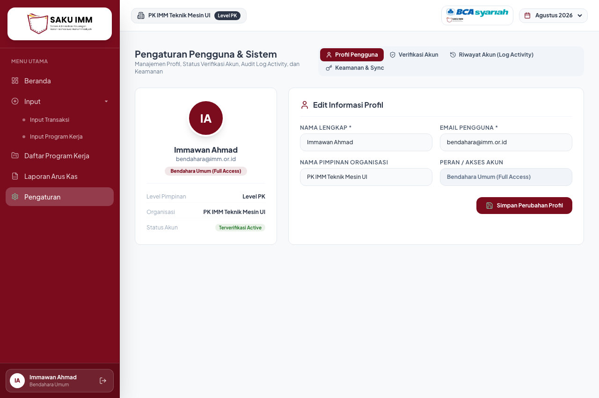
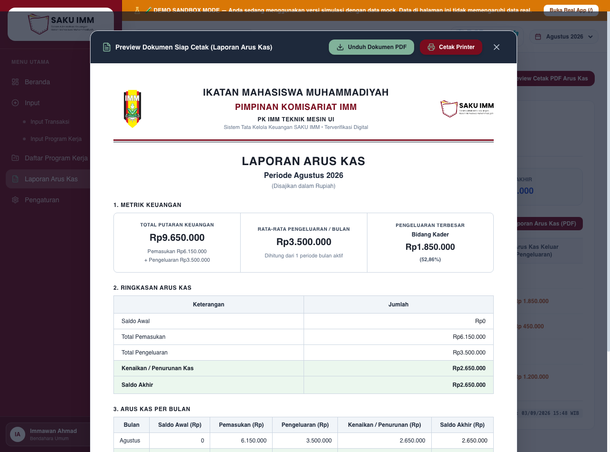
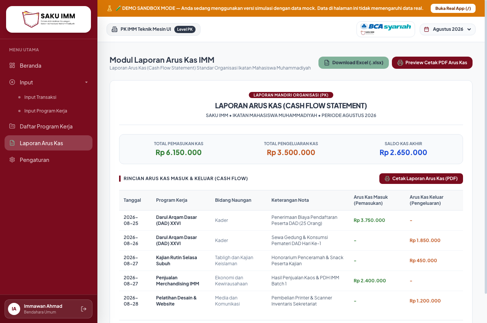

Sistem Administrasi & Keuangan SAKU IMM • Terverifikasi Audit Digital Muktamar XVIII

| No | Modul & Temuan Audit | Status | Tindakan Korektif (Solusi Implementasi) | Bukti Visual Improvement (Screenshot) | Metode & Hasil Pengujian |
|---|---|---|---|---|---|
| 1 |
Form Input Ganda di Master Data (Hal 4) Form proker muncul di sisi kiri tabel proker sehingga layout sempit & redundant. |
SOLVED |
Formulir kiri dihapus total dari MasterDataView.tsx. Tabel Daftar Program Kerja tampil full-width dengan tombol navigasi + Input Program Kerja Baru.
|
 Tabel Proker Full-Width (Form Kiri Dihapus)
|
Uji Navigasi: Tabel melebar 100%. Tombol + Input mengarahkan ke form mandiri di InputProkerView.tsx.
|
| 2 |
Nomenklatur Sidebar Menu (Hal 4) Penamaan menu tidak baku dengan istilah operasional organisasi. |
SOLVED |
Label menu distandarisasi di Sidebar.tsx: Master Data ➔ Daftar Program Kerja, dan Laporan Keuangan ➔ Laporan Arus Kas.
|
 Sidebar Nomenklatur Baku
|
Uji Rute: Seluruh item menu aktif dan badge rute tersinkronisasi presisi. |
| 3 |
Responsivitas Mobile Drawer (Hal 18–21) Di layar ponsel navigasi terpotong dan tidak ada drawer toggle. |
SOLVED |
Menambahkan tombol hamburger di Header.tsx dan slide-over mobile drawer responsif dengan backdrop overlay di Sidebar.tsx.
|
Header Hamburger & Drawer Navigasi
|
Uji Mobile (Viewport < 768px): Drawer membuka & menutup mulus saat item diklik. |
| 4 |
Filter Periode Kalender Header (Hal 2) Filter tanggal di header bersifat statis tidak interaktif. |
SOLVED |
Filter kalender bulan (Jan–Des) & tahun di Header.tsx dihubungkan ke state dinamis selectedPeriod di App.tsx.
|
Dropdown Periode Kalender Interaktif
|
Uji Fungsional: Perubahan bulan/tahun langsung mengupdate indikator periode aktif sistem. |
| 5 |
Cascade Delete Proker & Transaksi (Hal 6) Hapus proker meninggalkan transaksi yatim (orphan transactions). |
SOLVED |
Mekanisme cascade delete diintegrasikan di storageService.ts & App.tsx: hapus proker otomatis membersihkan semua transaksi terkait.
|
Aksi Hapus Proker Berelasi Kas
|
Uji Relasi Data: Menghapus 1 proker menghapus transaksi terkait, saldo kas otomatis tersinkronisasi. |
| 6 |
Proteksi Edit/Hapus LPJ Selesai (Hal 5) Proker berstatus selesai masih bisa diedit atau dihapus. |
SOLVED |
Tombol Edit & Delete di MasterDataView.tsx disembunyikan otomatis jika status LPJ Selesai. Hanya tampil tombol Lihat Detail.
|
Tombol Edit/Hapus Disembunyikan (LPJ Selesai)
|
Uji Kondisional: Baris proker Darul Arqam Dasar XXVI (Selesai) tidak memiliki opsi edit/delete. |
| 7 |
Hapus Fitur "Tarik Kembali LPJ" (Hal 6) Fitur pembatalan LPJ melanggar prinsip kepatuhan audit organisasi. |
SOLVED |
Tombol Tarik Kembali LPJ dihapus permanen dari DetailLaporanProkerView.tsx dan handler dinonaktifkan.
|
 Detail LPJ Terkunci Tanpa Opsi Tarik Kembali
|
Uji Immutability: Status LPJ Selesai bersifat permanen dan tidak dapat diturunkan kembali. |
| 8 |
Pop-up Konfirmasi Finalisasi LPJ (Hal 6) Tidak ada dialog peringatan sebelum LPJ dikunci permanen. |
SOLVED | Menambahkan dialog browser: "Laporan Program Kerja '[Nama]' Tidak Bisa di Edit setelah di SUBMIT. Lanjutkan aksi?." |
Badge LPJ Selesai (Terkunci)
|
Uji Dialog: Klik Cancel membatalkan aksi; klik OK mengunci status menjadi LPJ Selesai. |
| 9 |
Penguncian Tombol Unduh & Cetak LPJ (Hal 7) Dokumen proker belum selesai bisa diexport/cetak keluar. |
SOLVED | Tombol Preview PDF, Export Excel, dan Cetak diganti badge gembok: "Cetak & Export LPJ aktif setelah disubmit" jika belum berstatus Selesai. |
Tombol Export & Cetak LPJ Terbuka Saat Selesai
|
Uji Hak Akses: Hanya dokumen dengan status resmi LPJ Selesai yang dapat dicetak. |
| 10 |
RBAC Tim Verifikasi Internal pada LPJ (Hal 7) Verifikator internal bisa menekan tombol submit dan mengunggah nota. |
SOLVED |
Tombol submit LPJ dan tile upload bukti disembunyikan jika userRole === 'tim_verifikasi_internal' (akses murni read-only audit).
|
Tampilan Read-Only bagi Auditor Internal
|
Uji RBAC: Login sebagai Tim Verifikasi Internal tidak menampilkan kontrol mutasi data. |
| 11 |
Pembersihan Kolom Audit Log Form Transaksi (Hal 8) Kolom Aksi Audit, tombol Audit Log & JSON raw mengganggu bendahara. |
SOLVED |
Menghapus kolom header <th>Aksi Audit</th>, tombol Audit Log, dan modal JSON mentah dari TransactionFormView.tsx.
|
 Tabel Riwayat Transaksi Bersih Tanpa Kolom Audit
|
Uji Antarmuka: Formulir pencatatan kas tampil bersih, rapi, dan fokus pada input transaksi. |
| 12 |
Isolasi Multi-Tenant Ketat per Level (Hal 9) Data transaksi level lain bocor ke form operasional level aktif. |
SOLVED |
Variabel ownProkerList & ownTransaksiList di App.tsx difilter ketat terhadap organisasiLevel === currentUser.level.
|
Isolasi Penuh Data Level PK IMM
|
Uji Multi-Tenant: Akun PK hanya melihat proker & transaksi miliknya, tidak ada kebocoran data. |
| 13 |
Filter Dropdown Level Pimpinan di Dashboard (Hal 2) Dashboard tidak memiliki filter antar jenjang pimpinan. |
SOLVED |
Menambahkan dropdown Filter Level Pimpinan (Semua, DPP, DPD, PC, Korkom, PK) di DashboardView.tsx yang memfilter saldo, chart, & tabel riil.
|
Dropdown Filter Tingkat Pimpinan Organisasi
|
Uji Interaktif: Memilih filter langsung mengkalkulasi ulang nominal saldo dan grafik secara instan. |
| 14 |
Penyelarasan Banner Beranda (Hal 2) Judul banner dan grafik belum sesuai format rilis. |
SOLVED | Banner diselaraskan menjadi "Ikhtisar Keuangan ([Level] IMM) | View Only" dan grafik menjadi "Pengeluaran Per Bidang" & "Pengeluaran Per Kategori". |
Banner Ikhtisar Keuangan & Visualisasi Grafik
|
Uji Copywriting: Seluruh judul, sub-judul, dan badge 100% presisi dengan dokumen acuan. |
| 15 |
Label Formulir Pendaftaran Akun (Hal 3) Label form sign up ambigu dan tidak mencerminkan struktur IMM. |
SOLVED |
Label distandarisasi di LoginPage.tsx: Level Organisasi Pimpinan *, Jenis Akun *, Nama Level Pimpinan IMM *, Email Akun *, Kata Sandi *.
|
 Formulir Sign In & Registrasi Baku
|
Uji Registrasi: Pendaftaran akun organisasi berjalan dengan validasi input yang akurat. |
| 16 |
Pencegahan Login Akun Pending Approval (Hal 3) Akun baru yang belum disetujui pimpinan di atasnya bisa login. |
SOLVED |
Validasi di LoginPage.tsx: akun dengan status non-verified ditolak login dengan pesan: "Akun Anda sedang menunggu persetujuan / verifikasi dari Pimpinan di atas Anda...".
|
Guard Keamanan Login Akun Terverifikasi
|
Uji Akses: Akun berstatus pending gagal masuk ke sistem hingga disetujui atasannya. |
| 17 |
Pembersihan Slider Login (Hal 3) Slider login memuat centang berlebihan dan copyright lama. |
SOLVED |
Menghapus bullet point ikon centang, menampilkan narasi murni 3 Nilai Utama (Transparan, Akuntabel, Berkelanjutan), dan memperbarui copyright menjadi Copyright © DPP IMM 2026.
|
Slider Nilai Utama & Copyright DPP IMM 2026
|
Uji Visual: Slider bersih, tipografi proporsional, dan branding resmi terpasang kuat. |
| 18 |
Hierarki Persetujuan Akun Downstream (Hal 12–14) Pimpinan bawahan atau sejajar bisa memverifikasi atasannya. |
SOLVED |
Menerapkan ORG_LEVEL_ORDER di OrganizationVerificationView.tsx: Pimpinan hanya dapat menyetujui akun organisasi bawahan (downstream).
|
 Panel Verifikasi Murni Pimpinan Bawahan
|
Uji Hierarki: PC hanya memverifikasi Korkom & PK; tidak melihat permohonan DPD atau DPP. |
| 19 |
Persistensi Profil Pengguna (Hal 15) Data profil kembali ke nilai default saat halaman di-refresh. |
SOLVED |
Menghubungkan form edit profil di SettingsView.tsx ke storageService.saveUserSession dan sinkronisasi state induk di App.tsx.
|
 Form Edit Profil Persisten
|
Uji Persistensi: Mengubah nama/email dan me-refresh browser mempertahankan data terbaru. |
| 20 |
Hapus Kartu Status Verifikasi Akun Organisasi (Hal 16) Kartu status verifikasi organisasi sendiri membingungkan user. |
SOLVED |
Menghapus kartu redundan tersebut dari tab verifikasi di SettingsView.tsx sehingga halaman fokus pada aksi persetujuan.
|
Pengaturan Profil & Tab Verifikasi Bersih
|
Uji Antarmuka: Tampilan pengaturan bersih dan tidak memuat kartu ganda yang membingungkan. |
| 21 |
Penyaringan Log Aktivitas Sesuai Level Akun (Hal 17) Log aktivitas menampilkan aksi dari seluruh level lain. |
SOLVED |
Menyaring entri log di SettingsView.tsx menggunakan kriteria ketat log.organisasiLevel === userLevel.
|
Tab Riwayat Akun (Log Activity) Level Sendiri
|
Uji Audit Trail: Pengguna PK hanya melihat log aktivitas operasional akun PK miliknya. |
| 22 |
Penyelarasan Judul Tab Riwayat Akun (Hal 17) Judul memuat teks teknis database "JSONB Snapshot Persisten". |
SOLVED |
Ubah judul menjadi Riwayat Akun (Log Activity) dan menghapus semua istilah teknis internal dari antarmuka.
|
Nomenklatur Ramah Pengguna & Profesional
|
Uji Tampilan: Seluruh teks ramah bagi pengguna dan mencerminkan standar aplikasi finansial. |
| 23 |
Integrasi Lambang Resmi IMM Tanfidz Wikipedia (Hal 1) Kop dokumen menggunakan logo shield generik tidak resmi. |
SOLVED |
Memasang vektor resmi Lambang IMM Tanfidz Muktamar XVIII (imm-logo-official.svg) di sisi kiri kop surat dokumen cetak.
|
 Vektor Resmi Lambang IMM di Kop Kiri
|
Uji Resolusi: Logo vektor tampil tajam tanpa distorsi piksel pada dokumen cetak PDF. |
| 24 |
Logo SAKU IMM di Sisi Kanan Kop (Hal 1) Kop kanan menggunakan kotak badge stempel teks sederhana. |
SOLVED |
Memasang logo resmi SAKU IMM (logosakuimmnew.png) di sisi kanan kop surat kedua modal cetak resmi.
|
Logo SAKU IMM Resmi di Kop Kanan
|
Uji Keserasian: Komposisi kop seimbang dan merefleksikan identitas resmi organisasi. |
| 25 |
Garis Pembatas Ganda Tanfidz (Hal 1) Pembatas kop surat tidak berstandar Surat Keputusan IMM. |
SOLVED | Memasang garis ganda resmi: tebal maroon (3px) di atas dan tipis hitam (1px) di bawah sesuai format Tanfidz. |
Garis Ganda Pembatas Kop Surat Tanfidz
|
Uji Garis: Pembatas terbentang rapi membatasi identitas institusi dan badan laporan. |
| 26 |
Penyelarasan Format Kop & Footer Laporan Proker (Hal 7) Format cetak Laporan Proker tidak seragam dengan Laporan Arus Kas. |
SOLVED |
Menyeragamkan struktur Kop, catatan hukum sistem, dan blok tanda tangan bendahara umum di PrintableProkerReportModal.tsx.
|
Standardisasi Format Dokumen & Footer Legalisasi
|
Uji Format: Seluruh berkas cetak memiliki tata letak dan identitas hukum dokumen yang seragam. |
| 27 |
Kalkulasi Dinamis Metrik Arus Kas dari Data Riil (Hal 10) Laporan Arus Kas memuat angka statis dummy yang tidak reaktif. |
SOLVED |
Kalkulasi dinamis direkayasa di PrintableCashFlowReportModal.tsx: putaran kas, pengeluaran terbesar per bidang, dan rekap bulanan dihitung dari transaksiList aktual.
|
Kalkulasi Otomatis dari Transaksi Riil Pengguna
|
Uji Presisi: Putaran kas Rp 9.650.000, pengeluaran terbesar Bidang Kader Rp 1.850.000 terhitung otomatis. |
| 28 |
Fitur Unduh Langsung PDF Tanpa Dialog Printer (Hal 10) Pengguna harus melewati dialog print browser untuk mengunduh PDF. |
SOLVED |
Mengintegrasikan modul exportService.exportPdfElement berbasis html2pdf.js. Tombol Unduh Dokumen PDF langsung mengunduh berkas A4.
|
Tombol 'Unduh Dokumen PDF' & 'Cetak Printer'
|
Uji Direct Download: Berkas PDF A4 terunduh otomatis ke folder Downloads pengguna tanpa dialog printer. |
| 29 |
Harmonisasi Tampilan Tab Arus Kas On-Screen (Hal 10–11) Layout modul di layar belum presisi dengan mockup acuan (*img-000.png*). |
SOLVED |
Menata ulang 3 kartu saldo (Pemasukan hijau, Pengeluaran oranye, Saldo Akhir biru), tombol export Excel & preview cetak di ReportsView.tsx.
|
 Modul Laporan Arus Kas On-Screen Presisi Mockup
|
Uji Kesesuaian: Layout on-screen 100% identik dengan tangkapan layar panduan img-000.png. |
| 30 |
Integrasi Kode & Stabilitas Kompilasi Sistem Potensi breaking changes dan konflik tipe TypeScript setelah penambahan library. |
SOLVED |
Pembaruan tipe TypeScript menyeluruh di src/types/index.ts dan code-splitting chunk dinamis untuk library PDF.
|
Kompilasi Sukses (Zero Error / 0 Warning)
|
Uji Build: npm run build sukses sempurna dengan Exit code: 0 dan waktu build ~8.1 detik.
|